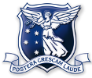
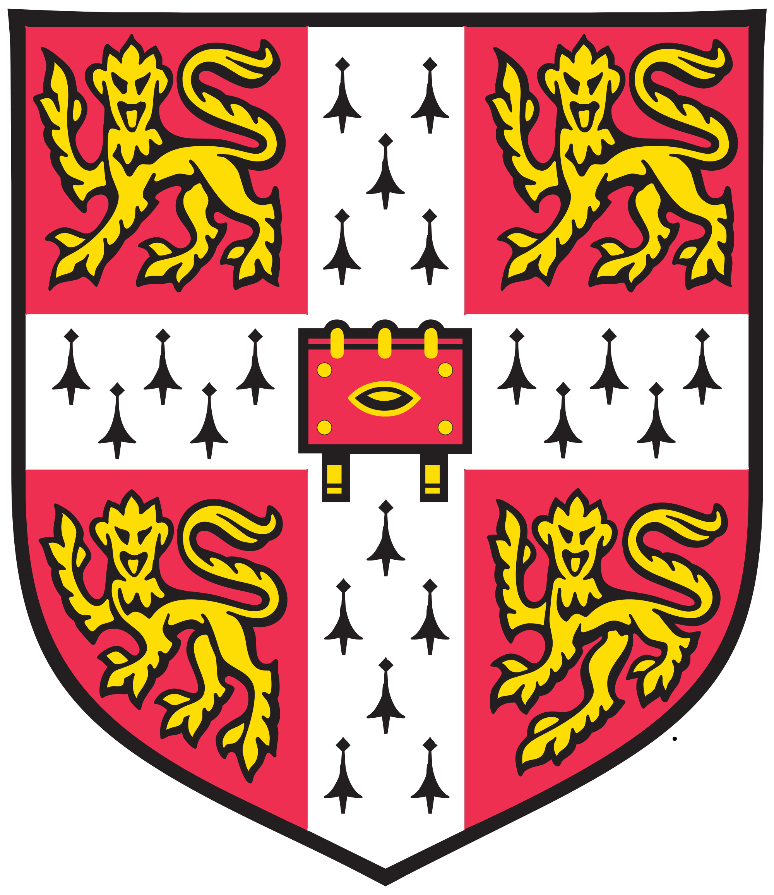

Rebecca K. Leane
| Home | • | Research | • | CV | • | Talks | • | About |
Detailed PDF version can be found here.
| Education | |
|  |
University of Melbourne 2013 - Present Centre of Excellence for Particle Physics at the Terascale (CoEPP) Ph.D. in Physics (Expected July 2017) Thesis Advisor: A/Prof. Nicole Bell |
|  |
University of Cambridge 2012 - 2013 Department of Applied Mathematics and Theoretical Physics (DAMTP) Master of Advanced Study in Mathematics (Part III of the Mathematical Tripos) Essay Advisor: Prof. Ben Allanach |
 |
Monash University 2008 - 2011 Bachelor of Science Advanced with Honours Majors: Physics and Mathematics. High Distinction. Thesis Advisor: A/Prof. Csaba Balazs |
| Research Experience | |
| 2016 Apr - Jun |
Visiting Researcher Center for Cosmology and AstroParticle Physics (CCAPP), Ohio State University, USA Working with Prof. John Beacom |
| 2015 Sept - Oct |
Visiting Researcher Department of Physics and Astronomy, Vanderbilt University, USA Working with Prof. Tom Weiler |
| 2013 - Present |
Graduate Student Researcher CoEPP, University of Melbourne, Australia Under supervision of A/Prof Nicole Bell |
| 2010 - 2011 |
Undergraduate Student Researcher School of Physics, Monash University, Australia Third year research project (2010), honours year research project (2011). Under supervision of A/Prof Csaba Balazs |
| Selected Prizes, Scholarships, Awards | |
| 2016 | Royal Society of Victoria Young Scientist Research Prize |
| 2016 | Science Abroad Travelling Scholarship |
| 2015 | Best PhD Candidate Seminar of the Year in the School of Physics, Univ. of Melbourne |
| 2015 | Laby Foundation Early Career Researcher Travel Scholarship |
| 2012 - 2016 | Australian Postgraduate Award (APA) |
| 2011 | Monash Jubilee Honours Scholarship |
| 2011 |
J. L. William Honours Scholarship | Selected Outreach |
| 2014 - 2015 |
Key Scientific Researcher on International Science Documentary Series “Uranium: Twisting the Dragon’s Tail” Worked with Emmy Award winning producer Sonya Pemberton and writer Wain Fimeri, over 12 months part time. Had a major role in explaining science content and developing the script for the series. The documentary was presented by Derek Muller of Veritasium, and aired in the United States, Australia, Germany, France, Middle East, Norway and Sweden. The series has been nominated for and won several film awards. US viewers can preview parts of the series on the PBS website. Others can view the trailer on YouTube. The press release from CoEPP is available here. |